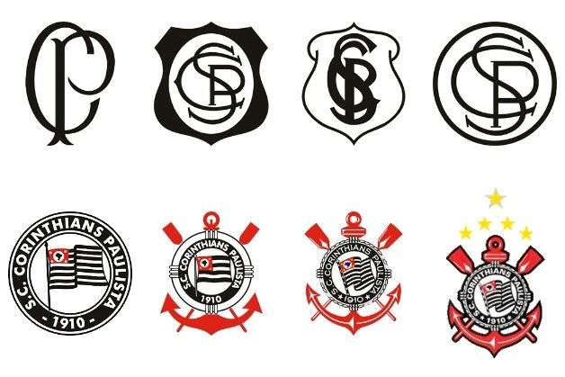
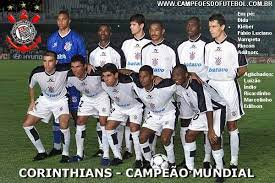
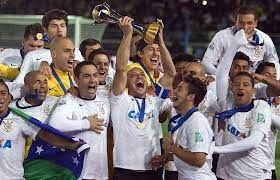

O Sport Club Corinthians Paulista, conhecido popularmente como Corinthians, é um dos clubes de futebol mais populares e vitoriosos do Brasil. Sua história começa em 1º de setembro de 1910, quando um grupo de operários do bairro Bom Retiro, em São Paulo, decidiu fundar um clube de futebol. Esses operários, inspirados pelo Corinthian FC, um clube inglês que excursionou pelo Brasil, deram origem ao Corinthians.
Em 1º de setembro de 1910, cinco operários foram inspirados pela visita do Corinthian Football Club ao Brasil. O time inglês havia vencido facilmente o Fluminense e o Club Athletico Paulistano, e nesse mesmo dia, conquistou outra vitória sobre um dos principais times paulistas da época, a Associação Atlética das Palmeiras.

Ao retornarem da partida, ainda envolvidos pela emoção da vitória, os cinco operários - Joaquim Ambrósio, Antônio Pereira, Rafael Perrone, Anselmo Côrrea e Carlos Silva - depararam-se com um terreno vago na Rua José Paulino, conhecida na época como Rua dos Imigrantes, na esquina com a Rua Cônego Martins, no bairro do Bom Retiro. Esse terreno viria a se tornar o primeiro campo do Corinthians, apelidado de “Lenheiro” devido ao seu passado como depósito de lenha.
Naquele momento, decidiram fundar um time. Formou-se o primeiro grupo com treze membros, composto pelos cinco idealizadores e mais oito moradores do bairro convidados, que contribuíram como sócios-fundadores do clube, ainda sem nome definido. As reuniões ocorriam nas casas de alguns integrantes, incluindo Miguel Bataglia, um alfaiate que se tornou, mesmo que brevemente, o primeiro presidente do clube.
O clube alvinegro rapidamente conquistou seu espaço no cenário esportivo, tornando-se conhecido pela raça e pela paixão de sua torcida. O primeiro título importante veio em 1914, quando o Corinthians venceu a Copa Rio Branco. Nos anos seguintes, o clube continuou a crescer e se destacar no futebol paulista e nacional.
Em 1977, o Corinthians conquistou seu primeiro título de campeão brasileiro, ao vencer o Internacional na final. Esse foi um marco importante na história do clube, consolidando sua posição entre os grandes do futebol brasileiro. Nos anos seguintes, o Corinthians continuou a acumular conquistas, incluindo o bicampeonato brasileiro em 1990 e 1998.

O ano de 2000 foi histórico para o Corinthians, pois o clube conquistou seu primeiro título da Copa Libertadores da América, ao vencer o Club Atlético River Plate na final. A conquista da Libertadores garantiu ao Corinthians a participação na final do Mundial de Clubes da FIFA, onde enfrentou o Vasco da Gama e venceu na disputa de pênaltis, tornando-se campeão mundial.

Um dos momentos mais emblemáticos na história recente do Corinthians ocorreu em 2012, quando o clube conquistou novamente a Libertadores da América e, em seguida, venceu o Chelsea na final do Mundial de Clubes da FIFA, em Yokohama, Japão.
Ao longo dos anos, o Corinthians construiu uma rivalidade intensa com o Palmeiras, seu principal adversário na cidade de São Paulo, conhecido como o "Dérbi Paulista". Esses confrontos entre Corinthians e Palmeiras são alguns dos jogos mais aguardados e emocionantes do futebol brasileiro.
Além de seu sucesso no futebol masculino, o Corinthians também possui uma equipe feminina de destaque, conquistando títulos e contribuindo para o crescimento do futebol feminino no Brasil.
O Corinthians é conhecido não apenas por suas conquistas em campo, mas também pela lealdade e paixão de sua torcida, que é uma das mais apaixonadas e numerosas do mundo. O clube continua a desempenhar um papel central na história do futebol brasileiro, mantendo viva a tradição e a identidade que o tornam um dos clubes mais queridos do país.